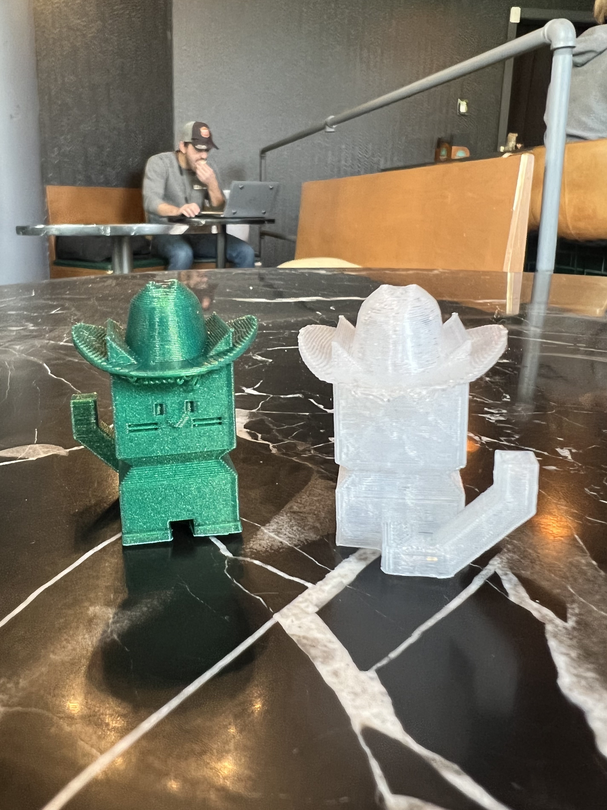
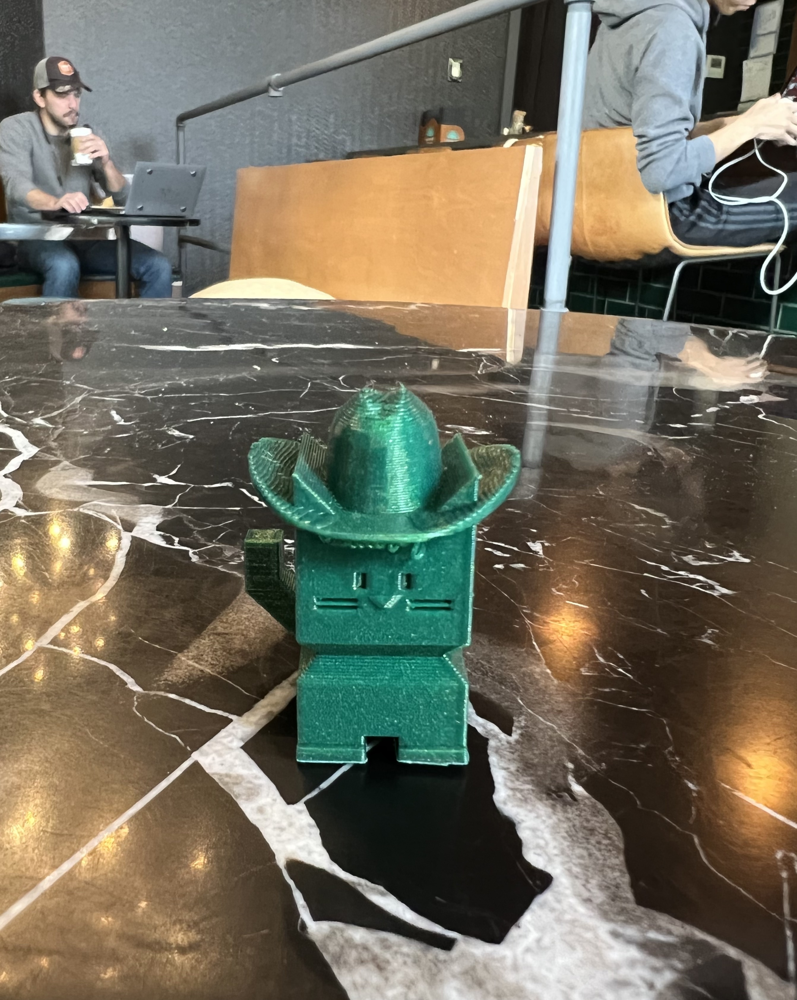
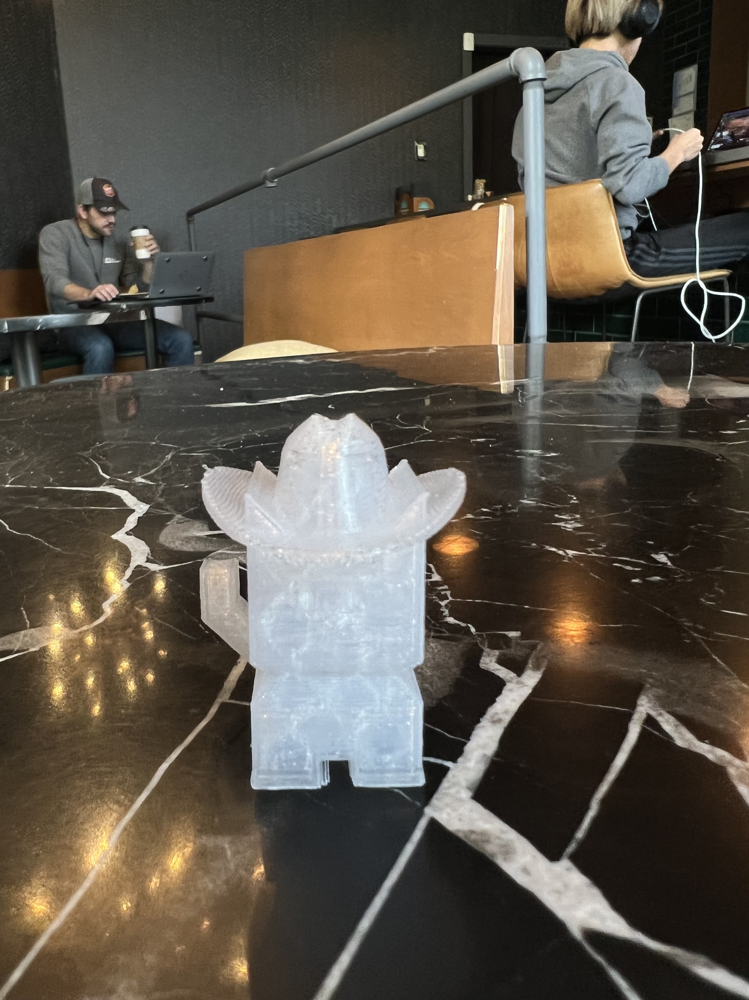
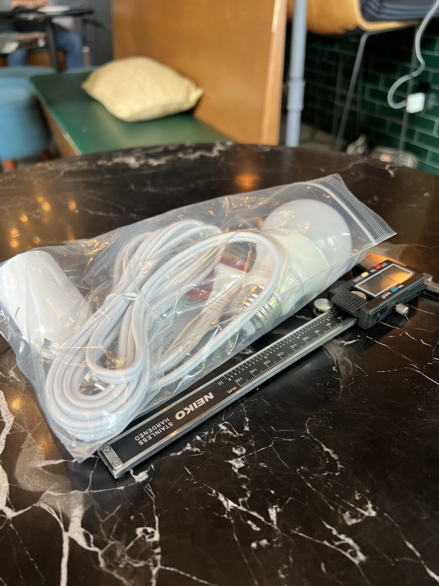

Bailey Dickey's Assignment 5!
Assignment 5: Getting Meshy... and Lamps!t

Assignment Prompt
Part 1: Modify the mesh of two STLs to produce a single printable STL. You may use whatever STLs you want, e.g. downloaded from Thingiverse or elsewhere! When exporting the STL from Rhino, it should pass all checks for rapid prototyping. Part 2: Please make (a start on) a lamp! Using your lamp innereds' measurements as a point of departure, make a lamp that can be assembled around the innereds.
Modifying the mesh of two STLs to produce a single printable STL.
I chose to edit and combine the mesh for a cat print I found here here
I very subtly altered some of the points in the hat to better fit with the shape of the cat, and then I carefully centered the two in order to place the hat on the cat’s head. I ended up printing two of the cowboy cats. The first was printed with a translucent filament that I wanted to test out for my upcoming lamp project. I found that a lot of fine detail in the face was lost with the clear filament, which will be good to know for the upcoming assignment. I then made another print of the cowboy cat with the green filament that I have been using for my other assignments and found that the details in the face were much easier to see!
 Getting Started on my lamp design.
I started my lamp project by measuring my lamp innards and lightbulb with my calipers. These measurements have been recorded in my notebook and will be used to guide the initial sizing for my prints. However, I will likely need to fine-tune the measurements as I start test printing. I also ideated by sketching and looking at reference imagery and decided on a simple spherical design with a geometric base.

Source Files